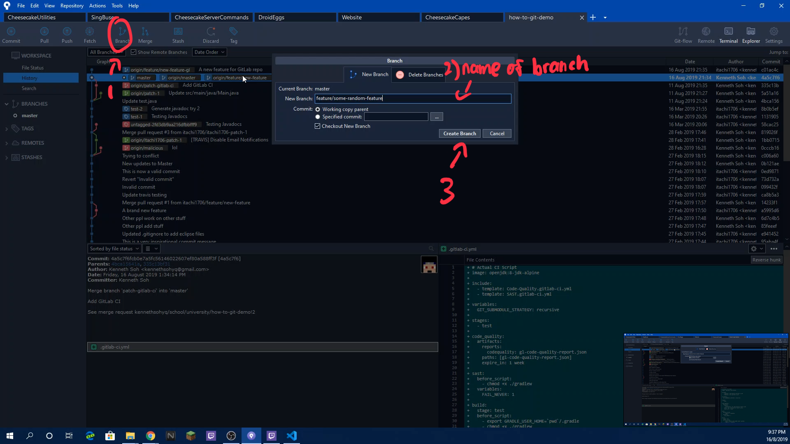
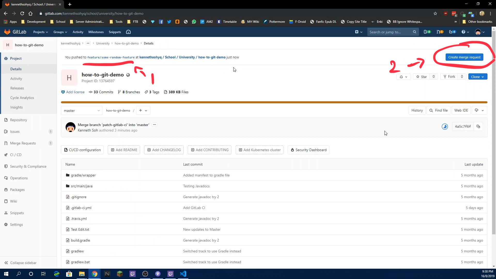
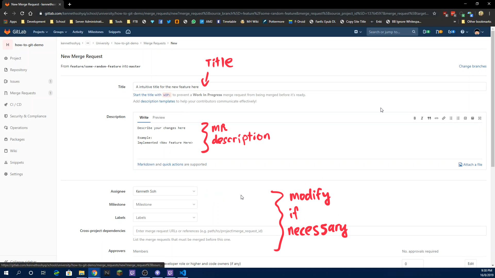
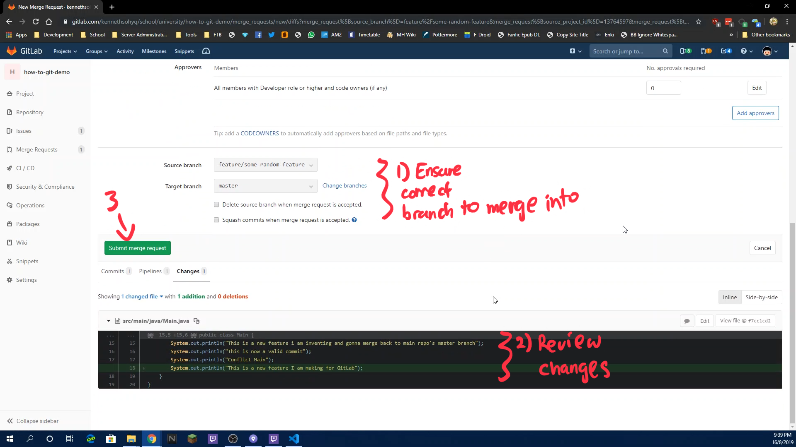
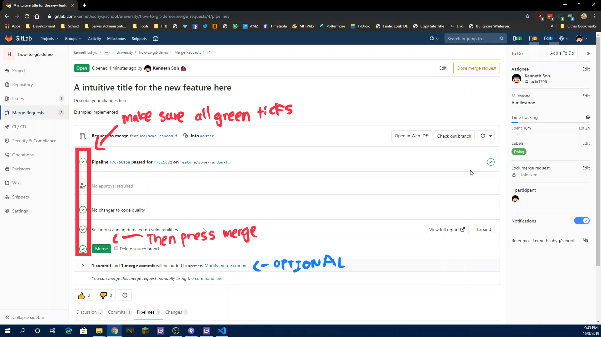
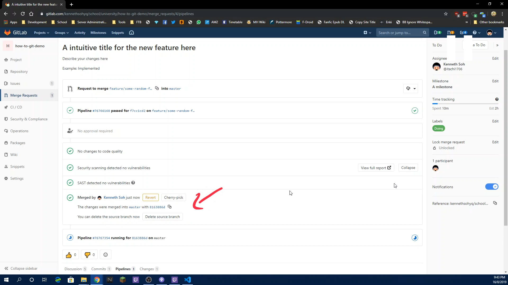
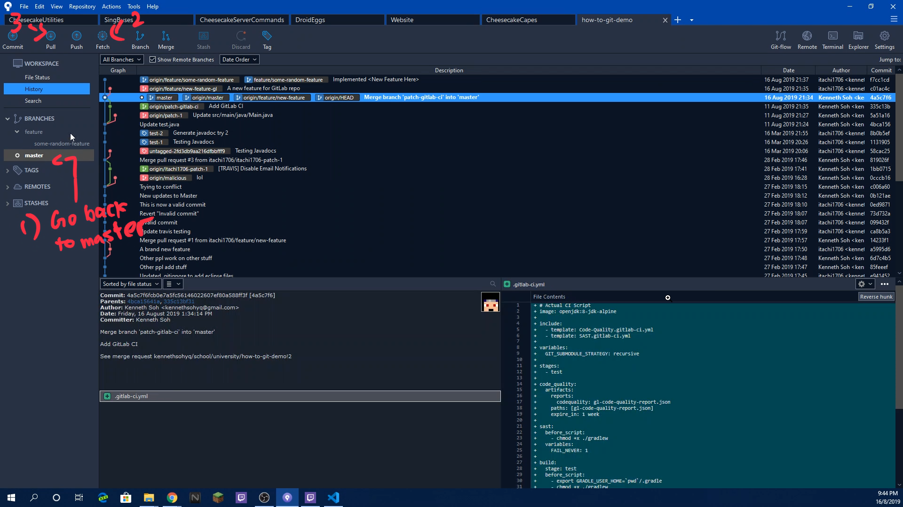

This will show you how to do git-flow style of committing. Ideal guidelines is that we never commit anything to master directly. So instead, we make use
of branches where we will do our code/feature/implementation/whatever and then we will issue a Merge Request (MR) to commit said code back to master. This way we are able to do
extra validation on our code through code review by Continuous Integration (CI) servers or other collaborators. This will ensure that bad code will never be found on master
Note: Basically most of the features should follow this flow
(everything on a branch and changes back to master through a Merge Request). This way it will allow us to do our own
issues simultaneously effectively
Click the Branch button to create a new branch
Enter your desired branch name (To sort the branch to folders, append / to the branch name)
Click Create Branch to confirm branch creation

When it is all done, head over to the repo project page
You should be able to see your branch name that you just pushed at the top of the page, and select Create merge request

Note: If it does not show up, manually create the MR by going to the Merge Requests page and select "New merge request", after which select your branch in the "Select source branch" dropdown box
Enter your Merge Request Title and Descriptions accordingly if needed. Also modify the settings at the bottom if you need to do so

Double check that the branch you are merging to is correct and review your changes again
When you are done, create the MR by clicking the green Submit merge request button

Now we play the waiting game until a green tick appears and it says All checks have passed (Note: If it fails, your code is not compiling and needs to be fixed)
If all checks have passed, either you or anyone else can go ahead and click the green Merge button

Ensure that it says your merge request has been merged

When you are done you can switch back to the master branch (you may now delete the branch if you want, though its entirely optional)

Demo Video The following is a video on how this is being done. Read the how-to guide before watching the video for actual steps to do it
Console Commands Used
git checkout -b "branchname" # Checkouts a new branch
git add [-A] "file" # Adds file to Commit
git commit -m "Message" # Commits messages
git push # Push commits to GitHub
git checkout master # Go back to master
git branch -d "branchname" # Deletes the branch